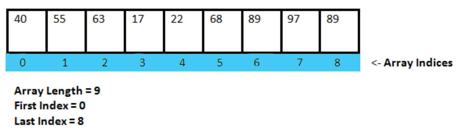
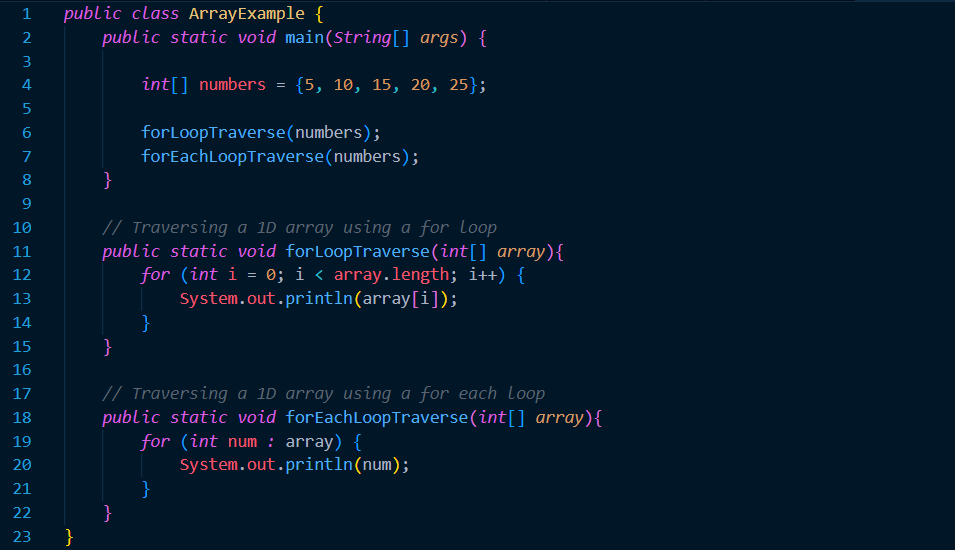
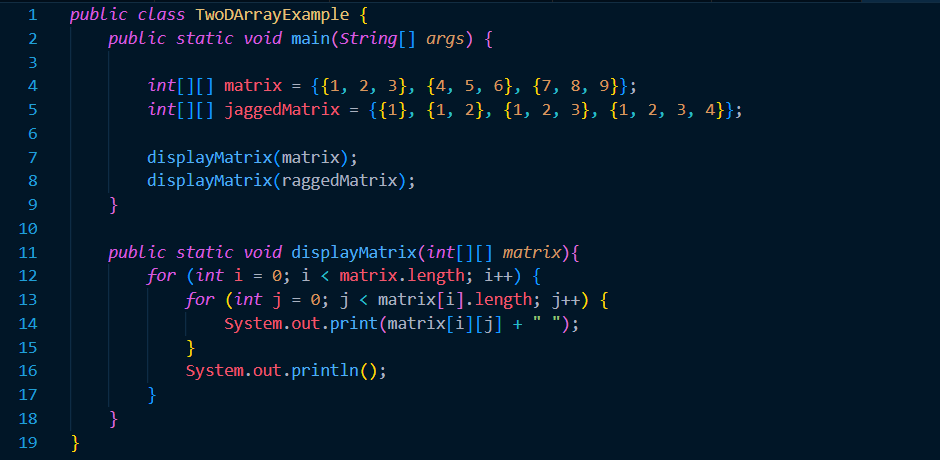

Arrays
Prerequisite Knowledge and Terms
Before proceeding with this tutorial, make sure you are familiar with the following concepts:- A basic understanding of variables, primitive data types and objects.
- Familiarity with forms of iteration such as 'for loops' and 'while loops.'
- Element: A specific value inside an array.
- Index: A 0 based positioning system that determines the positions of specific elements inside an array.
- Array length: the number of elements inside the array. Once the array length is determined, it cannot be changed.
Introduction
Arrays are data structures that are used to implement a list of primative or object reference data. Arrays help simplify the creation and usage of multiple variables of the same data type that are intended to be used for the same purpose.Take the following code as an example. Instead of creating 5 variables that each represent the name of a student, we can create an array of 5 elements that hold the names of each of the students. Using arrays allow us to access variables of similar data purpose using only one identifier.

1D Array Example
The previous example introduced the declaration and initialization of a 1 Dimensional array. In more depth, a one-dimensional array is a collection of variables of the same data type that are stored together in contiguous memory locations. These variables can be accessed using an index value, starting from 0 for the first element and increasing by 1 for each subsequent element.Take a look at the image below as a reference. As we can see, the array has 9 elements, which mean it has accessible elements at indexes 0 through 8. Attempting to access or change the value of an element at an index lower or higher than 0 will return an IndexOutOfBoundsException. This is an error that means the index in which you are trying to access does not exist.

Something important to note is that a 1D array is linear; meaning that it has a single `row` of elements. Notwithstanding, throughout the rest of this tutorial you will discover that a 2D array has `rows` and `columns.`
Anyhow, what makes arrays very useful is being able to access multiple variables of data with one identifier. A key technique regarding accessing the elements of an array is traversing it. Traversing an array is one the program loops through all the elements of an array. This is done using many forms of iteration. However, the two most common are the `for loop` and the `for each loop.`
Take a look at the code below. The first method uses a `for loop` to traverse the array and access all its elements. Using a for loop is a very effective way to traverse an array because we have access to each indice because of the loop variable. The second method uses a `for each loop` to traverse the array. A `for each loop` instantly gives you access to each individual element, however, you do not have access to the index each element. These types of loops are faster than normal `for loops,` having said this, they can be very limiting because cannot modify the looping variable, nor have access to the indices of the elements.

2D Array Example
2 dimensional arrays, are arrays, that have arrays as elements, where each array element, has the same data type. In simple terms, picture a coordinate system or matrix where there are rows and columns. In 1D arrays, elements were accessed using only 1 indice. In 2D arrays, elements are accessed using 2 indices: one for the `row coordinate` and one for the `column coordinate.`The following code example demonstrates how a 2D array would be traversed. Quite similar to 1D arrays, a 2D array uses some form of iteration to traverse the array and access all of its elements. It is important to note that in a 2D array, not all the subarrays need to be the same size length. These types of 2D arrays are called jagged arrays. A crucial point to remember is that when traversing jagged arrays, the nested for loop conditional statement must ` < matrix[i].length ` instead of ` < matrix[0].length.`

Additional Takeaways
- When using arrays, be careful about throwing the ArrayIndexOutOfBoundsException.
- The range of an array starts from 0, all the way array.length - 1 (inclusive).